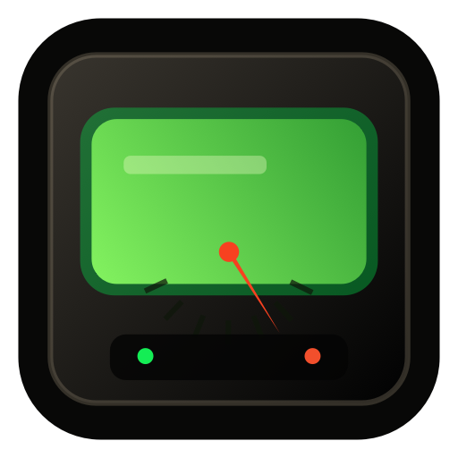

050100
38%
CPUAKTYWNOŚĆ
Monitoring Zasobów 1.0 · macOS
Natywny monitoring CPU, GPU, RAM, dysku i sieci — z bezpiecznym Warsztatem do analizy miejsca, aplikacji i kondycji systemu. Wszystko lokalnie.

STUDIO GREEN / LIVE DECK
Dekoracyjna wizualizacja stylistyki interfejsu — wartości są przykładowe.
JEDNA APLIKACJA, KILKA PERSPEKTYW
Wybierz spokojne wskaźniki na biurko albo zejdź do procesów, urządzeń i historii operacji.
CPU, GPU, RAM, dysk i sieć w analogowych wskaźnikach. Do tego Szczegóły, Urządzenia, Mini, Biurko i panel w pasku menu.
Inspektor działa tylko do odczytu. Porządki i aplikacje trafiają do Kosza dopiero po ręcznym wyborze i osobnym potwierdzeniu.
Bez konta, reklam, analityki i trackerów. Ustawienia, historia Warsztatu i snapshot Stream Deck pozostają lokalne.
BEZ „MAGICZNEGO” CZYSZCZENIA
Warsztat pokazuje największe pliki, instalatory, pozostałości i aplikacje, ale niczego nie zaznacza automatycznie. Chroni programy systemowe, aplikacje Apple, uruchomione procesy i sam Monitoring Zasobów.
Serwis sprawdza wolne miejsce, stan termiczny, zasilanie, RAM, trasę sieciową i czas pracy systemu — bez naprawiania usług i bez proszenia o uprawnienia administratora.
DOPASUJ SWÓJ RACK
Ustaw progi kolorów, kolejność paneli, tempo odświeżania i zachowanie igieł. Możesz też uruchamiać aplikację wraz z macOS albo zostawić ją wyłącznie w pasku menu.
LOKALNY MOST
Aplikacja zapisuje lokalny, wersjonowany snapshot JSON i obsługuje deep linki do Racka oraz Szczegółów. Snapshot nie zawiera PID-ów, nazw, komend ani ścieżek procesów.
{
"version": 1,
"metrics": {
"cpu": { "available": true },
"memory": { "available": true }
}
}INSTALACJA
Pobierz podpisany obraz wersji 1.0 z GitHub Releases.
Otwórz DMG i przeciągnij Monitoring Zasobów do folderu Applications.
macOS sprawdzi podpis Developer ID oraz bilet notaryzacji Apple.
MONITORING ZASOBÓW 1.0
Natywnie, lokalnie i bez abonamentu uwagi.